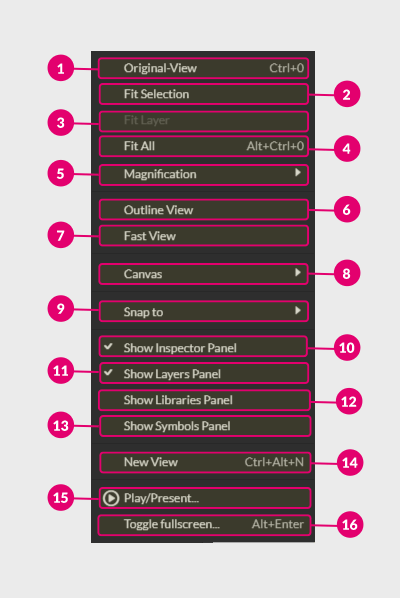

The View Menu contains tools related to how you see things in Gravit Designer.
You can show grid, rulers, set guides, control scale, and even play a slideshow.

Original View(1)
While you are working on a project, you can move your canvas and play with the scale. The Original-View (+) allows you to return to 100% of scale and the central position of the canvas within a single click.
Fit Selection(2)

The Fit Selection(2) scales a selected object or a group of objects up and down to fit them to the size of the document’s window.
Fit Layer(3)

Use the Fit Layer if you want to focus on a specific layer. As with the previous function, Fit Layer fits all objects within the selected layer to the document’s window.
Fit All(4)

The Fit All allows you to preview all pages fitting them to the size of the document’s window.
Magnification(5)

The Magnification has its own submenu with a dozen scale options (1) available.
It also contains Zoom In (2) (+) and Zoom Out (3) (+) functions to scale the canvas up and down respectively.
Outline View(6)

The Outline View allows you to preview the contours of all vector objects. It vanishes all the effects, fills and borders leaving simple outlines on the transparent background.
Fast View(7)
Toggle the fast view to make the rendering quick. It rasterizes effects and objects making the rendition super fast at the expense of quality at zoom.
The fast view is awesome for effect heavy artworks or low-spec machines, e.g. portable devices and drawing tablets.
Canvas(8)

The Canvas has its own submenu:
- Toggle Show Rules (1) (++) to bring up/hide rulers, that help you to scatter objects more accurately on the canvas.
Note: They also give you access to guides, that are useful in aligning, dividing, and positioning objects on the page. To bring up a guideline head over to the outskirt of the document’s window where the rulers are, and drag your mouse towards the chosen place on the canvas.

- Toggle Show Guide Lines (2) (+) to hide/show the guidelines you’ve already placed on the canvas.
- Toggle Show Symbol Labels (3) to hide/show symbols titles in the top left corner of the symbol’s bounding box.
- Toggle Show Grid (4) (++) to bring up/hide the grid.
- Toggle Show Slices (5) to reveal/hide slices you’ve created with the Slice Tool.
- Toggle Show Effects (6) to hide/show all effects applied to the object.
Snap To(9)

The Snap To has its own submenu:
- Toggle Use Snapping(1) + to enable/disable the snapping for the current document.
- Toggle Use Snap Zones(2).
- Toggle Snap to Grid(3) to enable/disable grid snapping
- Toggle Snap to Guidelines(4) to enable/disable snapping to the guides.
- Toggle Snap to Full Pixel(5) to enable/disable per pixel snapping.
Note: Snap to Pixel changes the way how you move things in Gravit Designer restricting the values of position and free transformations to the full pixels without decimals. This feature is very helpful in icon design.
- Toggle Snap to Anchor Points(6) to enable/disable the snapping to anchor points of the vector objects.
- Toggle Snap to Shapes(7) to enable/disable the snapping to the shapes. This option is very helpful in fitting objects to each other.
- Toggle Snap to Pages(8) to enable/disable the snapping to the sides of the canvas.
Show Inspector Panel(10)

Toggle the Show Inspector Panel to hide/show Inspector Panel.
Show Layers Panel(11)
Toggle the Show Layers Panel to switch the focus to the Layers Tab.
Show Libraries Panel(12)
Toggle the Show Libraries Panel to switch the focus to the Libraries Tab.
Show Symbols Panel(13)
Toggle the Show Symbols Panel to switch the focus to the Symbols Tab.
New View(14)
Use the New View to duplicate the whole document with all data.
Play/Present(15)

Use Play/Present to run a fullscreen presentation inside Gravit Designer. Use and arrows to navigate through the slideshow. Each page would represent a single slide.